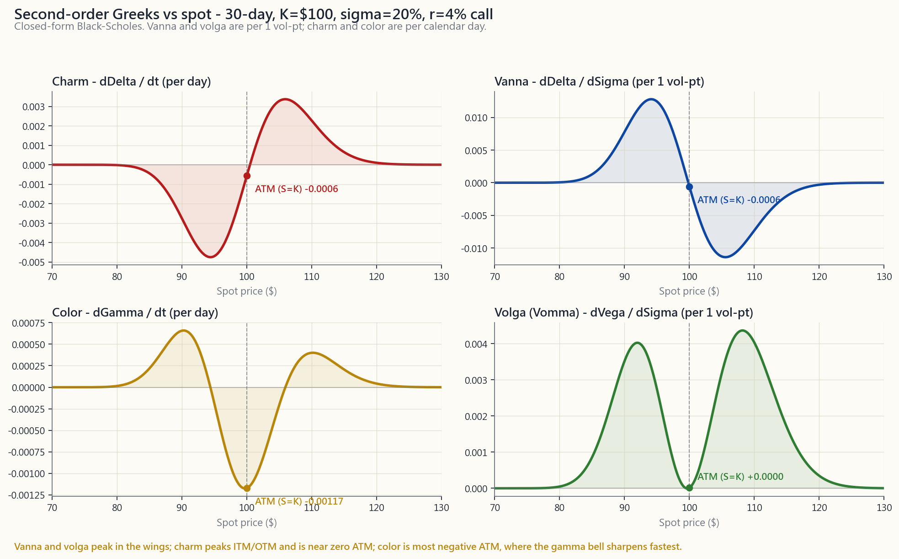
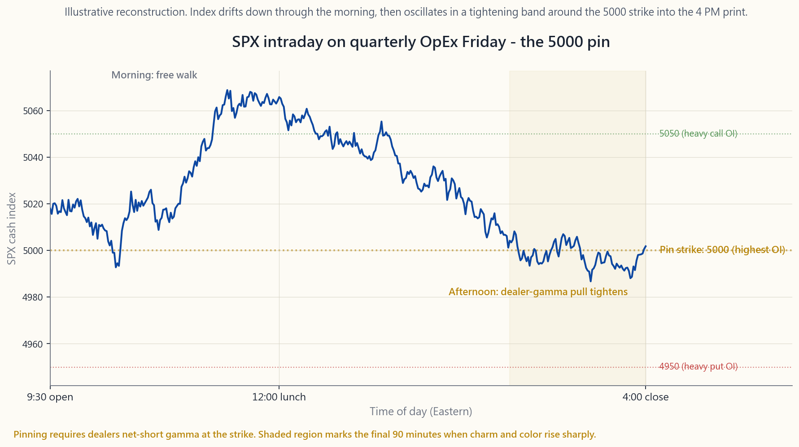

Side Lesson 20: Greeks Deep Dive — Vanna, Charm, Color, and Second-Order Surprises
1. Why This Is Important
Week 29 introduced the five first-order Greeks — delta, gamma, theta, vega, and rho — as the partial derivatives of an option's price with respect to the inputs that matter (spot, time, volatility, rates). For 95% of retail option positions, those five are everything you need. Size your covered call by delta, watch your theta, glance at vega before earnings, and you are done.
But options live on a non-linear surface, and the first-order numbers are only the local slope. Once a portfolio is large enough — or once you start hedging dynamically, or running 0DTE flow — the second-order Greeks start to matter:
sharp VIX spike during a sell-off does not hurt your puts as much as you would have predicted from delta alone.
(charm).** Your weekend hedges are wrong by Monday open. ATM options' delta plus charm explains why pin risk is real.
gamma profile from week 29 turns into a needle on expiration day. Color is what describes the steepening.
IV does not change vega linearly. Volga is why deep OTM "lottery tickets" can quintuple in a single VIX-66 day.
There is a fifth, broader reason this lesson exists: **dealer positioning has become a first-order driver of intraday SPX behavior since 2022.** The explosion of zero-DTE (0DTE) flow on the index options has flipped the sign on aggregate market-maker gamma multiple times per week. June and December quarterly OpEx weeks now show clear pin patterns where SPX hugs a round-number strike like a magnet into the 4 PM print. None of that flow is visible if you only know delta. Knowing where the second-order Greeks are concentrated is how you read it.
The honest framing for retail, though — and this lesson hammers it in three places — is that **unless you have more than ~5% of your net worth in options, second-order Greeks are interesting, not actionable.** Read this lesson the way you would read a book on engine internals: you will be a better driver, but you do not have to rebuild your carburetor.
2. What You Need to Know
2.1 First-Order Greeks — One-Line Refresher
For a European call priced via Black-Scholes with spot $S$, strike $K$, time-to-expiry $T$, volatility $\sigma$, and risk-free rate $r$:
- Delta $\Delta = \partial C / \partial S = \Phi(d_1)$ — the
- Gamma $\Gamma = \partial^2 C / \partial S^2 = \phi(d_1) /
- Theta $\Theta = \partial C / \partial t$ — the daily decay,
- Vega $\nu = \partial C / \partial \sigma = S \phi(d_1) \sqrt{T}$
- Rho $\rho = \partial C / \partial r = K T e^{-rT} \Phi(d_2)$ —
That is the table you can read off any broker platform. Everything below this section is the derivatives of those derivatives.
2.2 Vanna — When IV Moves, Delta Moves
Vanna is the cross-derivative
$$ \text{vanna} = \frac{\partial \Delta}{\partial \sigma} = \frac{\partial \nu}{\partial S} = -\phi(d_1) \frac{d_2}{\sigma} $$
In words: how much your delta changes per 1 vol-point change in IV.
The classic case: you are long a -25-delta SPY put as a tail hedge. The market sells off 4%, but at the same time VIX jumps from 14 to
even before you account for the spot move, because vanna for a put of that strike is positive (-d2 is positive when the put is OTM, and the negative sign in the formula flips). The hedge works *better than the static delta would suggest* — that is the vol-tail-wags-dog mechanic, expressed in a Greek.
Same mechanic, opposite direction: a covered-call seller above the money sees their short-call delta rise when IV pops, meaning their effective long stock exposure shrinks faster than expected. That is a vanna assignment risk.
Where vanna concentrates: OTM options, both calls and puts. At-the-money, $d_2$ is near zero, so vanna is near zero too. The sign rules of thumb (call vanna > 0 for OTM, < 0 for ITM; puts mirror) come straight from the sign of $d_2$.

The top-right panel of the image above shows vanna's S-curve: peaks of opposite sign on either side of the money, zero at ATM. This is why dealers obsessing over their book's vanna exposure focus their attention on the 25-delta and 10-delta wings, not on the 50-delta strike.
2.3 Charm — When Time Passes, Delta Moves
Charm (also called delta decay) is
$$ \text{charm} = \frac{\partial \Delta}{\partial t} = -\frac{\partial \Delta}{\partial T} $$
For a call with $r=q=0$ this simplifies to a clean
$$ \text{charm}_{\text{call}} = -\phi(d_1) \cdot \frac{d_2}{2 T} $$
What that means in trading terms: **even if SPY does not move at all, your delta drifts overnight.** A 60-day, -30 delta put on SPY with 30% IV picks up about +0.0035 of delta per day from charm alone. Stack a Friday-to-Monday weekend in there and the position has shifted ~0.01 of delta before the open Monday — just from time elapsing.
Practical implications:
Friday at 4 PM, you will be off-hedge on Monday at 9:30 AM by roughly $\text{charm} \times 3$ days, even if futures opened unchanged. Delta-neutral books rebalance for charm into Friday's close.
options with hours to expiry have $|d_2|$ close to zero but $T$ in the denominator collapsing — charm explodes. That is what makes it impossible to know whether you are going to be assigned on a Friday $K = S$ short call until the print.
short leg's delta drifts faster than the long leg's. If you buy a calendar at zero net delta, you are long charm — your delta will swing one way or the other as time passes.
2.4 Color — When Time Passes, Gamma Moves
Color (or gamma decay) is
$$ \text{color} = \frac{\partial \Gamma}{\partial t} $$
Where charm describes how delta drifts with time, color describes how gamma drifts with time. This is the Greek that gets quoted in dealer-positioning reports under names like "gamma roll-off" or "gamma re-loading."
The shape: gamma is a bell. As $T \to 0$, the bell **gets taller and narrower**. Color is the rate at which that narrowing happens. The center of the bell (ATM) sees gamma rise toward infinity in the last hours; the wings see gamma collapse to zero.
A trading-floor way to phrase it: *"this morning my book is short $5M of gamma at 4980 strike; if SPX stays here through close, color makes it $7M short by Wednesday."* The position has not moved, the underlying has not moved, but the risk has grown.
2.5 Volga (Vomma) — Vega's Own Convexity
Volga is the second derivative of price with respect to vol:
$$ \text{volga} = \frac{\partial \nu}{\partial \sigma} = \nu \cdot \frac{d_1 d_2}{\sigma} $$
It tells you whether your vega exposure itself accelerates or decelerates as IV moves. The sign is positive when $d_1 d_2 > 0$, which means deep OTM and deep ITM options have positive volga while ATM options have volga near zero (because $d_2 \approx 0$ there).
Why this matters: "lottery ticket" deep-OTM puts during a vol spike. A 10-delta SPY put bought at IV 18% is worth $0.40. The market sells off 6%, IV pumps to 38%, and the put — even ignoring the move in spot — multiplies because vega itself rose as the strike moved closer to the money in vol-distance terms. Volga is why short-vol traders famously blow up on tail events: their vega got shorter faster than they could hedge it.
2.6 Dealer Positioning, Gamma Walls, and 0DTE
This subsection is the one that has changed the most since 2022.
Pre-2022: the bulk of SPX option open interest was monthly expirations, with quarterly OpEx (the third Friday of March, June, September, December) being the largest. Dealers' aggregate gamma sat predominantly at round-number strikes (5000, 5100, 4900). On expiration week — Wednesday especially, when index gamma starts to roll off — SPX often "pinned" near a major strike because the dealers who were short gamma at that strike had to keep buying the dip and selling the rip to stay delta-neutral.
Post-2022: the 0DTE explosion. Daily expiries on SPX/SPY went from a niche product to ~45% of total SPX option volume by mid-2024. Dealers' net gamma can flip from long to short multiple times per day. The pinning patterns are now both more frequent (because expiry is every day) and more violent (because charm and color are extreme on a same-day option).

The image above is an illustrative reconstruction of an SPX cash session on a recent quarterly OpEx Friday, with the index drifting through the morning, snapping toward 5000 by lunch, and effectively oscillating in a 0.15% band around that level for the final two hours. The dotted horizontal lines mark the three highest-OI strikes into the print. None of that is mechanical destiny — but it is now common enough that desk research at every prime broker tracks it.
The retail takeaway: if you are short an iron condor whose short leg is a major round-number strike during quarterly OpEx week, **do not chase price action** if SPX seems "magnetized" to that strike on Wednesday-Thursday-Friday. The behavior is explained, not magic; it is also reversible the moment options expire and dealers re-hedge. Your edge is patience.
2.7 The Retail Filter — When Second-Order Greeks Actually Matter
Here is the rule, repeated because it is important:
**Unless options are more than ~5% of your investable net worth, do not optimize for second-order Greeks.** The first-order ones, plus basic position sizing, will dominate any difference. The marginal edge from understanding charm is real but small for someone with a single covered-call program or a quarterly tail hedge.
The exceptions where it does start to matter:
re-hedging dynamically, you are making the second-order Greeks into your P&L drivers. Vanna and charm move your delta between re-hedges; volga and color move your gamma exposure.
color, and theta acceleration interact non-trivially. If you are still in the position at T<7d, you need the full picture.
blows up short-strangles when "implied move" is breached.
first-order on a same-day option.
Outside of those four cases, the lesson lives in your peripheral vision: useful context, not a hedging instruction.
3. Common Misconceptions
pre-2022. Post-2022, with 0DTE and large quarterly OpEx, vanna and charm flows are observable in intraday SPX data. They are academic only if you ignore the index that 70% of US retail equity is benchmarked to.
depends on moneyness. Long OTM calls have positive vanna; long ITM calls have negative. The mistake comes from confusing vanna (cross-derivative) with vega (which is always positive for long options).
price; charm is the decay of delta*. A position can have negative theta and positive charm simultaneously (a long OTM call burns premium daily but its delta drifts toward zero in absolute value on the same time axis).
gamma is least stable on expiration day. Color (the rate at which gamma changes per unit time) is largest near expiry, and gamma itself can spike toward infinity at exactly $S = K$, $T = 0$.
mechanic requires dealers to be net-short gamma at the strike. If they are net-long gamma (because customer flow has been buying options instead of selling), the same setup produces anti-pinning — magnification of moves, not damping.
structure of intraday SPX volatility. Vanna and charm flows on 0DTE can produce identifiable intraday patterns (morning chop, afternoon trend) that did not exist five years ago. It is a real structural change, not a fad.
any large vol move. The asymmetry — vol can rise faster than it falls — is what creates a positive expected return for being long volga in a tail-hedge construct.
Hedging vanna requires options at different strikes; hedging color requires options at different expiries. Each hedge adds transaction cost, and each adds residual risk in the Greek you used as a hedging instrument. Institutional desks accept residuals in third-order Greeks.
structures often have positive volga, which is convexity working for you during a vol expansion. The question is what you paid for it (theta) versus how much vol-of-vol you actually got.
linearly per contract, but the underlying spot and IV processes do not scale linearly. A 100-contract position behaves differently from 10 ten-contract positions across different strikes — diversification across the smile changes the aggregate Greek profile.
4. Q&A Section
**Q1: If charm changes my delta overnight, why doesn't my broker re-hedge for me?**
It does not, because it does not know your hedging policy. Brokers report your portfolio Greeks (delta, gamma, theta, vega) but do not auto-rebalance hedges. If you run a delta-neutral book, you place the rebalance order yourself based on the morning's portfolio delta. Charm is one of the inputs your hedging algorithm should account for; weekend charm is the most common one missed.
Q2: Can I observe vanna flows on a public chart somewhere?
Indirectly. Several research desks (SqueezeMetrics, SpotGamma, Cboe research) publish daily estimates of dealer gamma exposure ("GEX") and vanna exposure. The numbers are estimates because dealer books are not public. The quality is "directionally useful" not "tradeable on its own." Treat them like sentiment indicators.
Q3: What's the simplest strategy whose primary Greek is volga?
A short ATM straddle is short volga (you lose convex amounts when IV expands). Conversely, a long strangle, especially deep OTM, is long volga. The volatility risk premium (week 49) is essentially the market paying a premium to insure the negative-volga seller against tail-vol expansions.
Q4: Why do option books often "pin" near round strikes specifically?
Two reasons. First, customer flow tends to cluster at psychologically round strikes (5000, 5100), so open interest is highest there. Second, those round strikes attract index-arb hedging from ETF market-makers and SPX/SPY converters. The combined effect is more gamma sitting at the round number than at, say, 4983, which means dealers' gamma-induced rebalancing pressure peaks there.
Q5: Does color really matter to a covered-call seller?
Marginally. If you write a 30-day covered call, color tells you that the position's gamma profile narrows over the 30 days — by day 25, your call's gamma is concentrated in a narrow band around the strike. This affects assignment probability if the stock starts the final week near the strike. Most retail covered-call writers do not care, but it is the technical reason "rolling at 21 DTE" is the common rule: that is the date by which the gamma re-concentration becomes meaningful.
Q6: Is vanna positive or negative for puts?
Same formula, opposite sign convention. For a put, vanna $= -\phi(d_1) \cdot d_2 / \sigma$ as well. The interpretation flips: when you are long an OTM put and IV rises, your delta becomes more negative (closer to -0.5 from -0.3), which actually makes you *more bearish- hedged*. That is the structural reason vol spikes during equity sell-offs make tail hedges more effective than they "should" be.
Q7: Are there third-order Greeks?
Yes — speed (∂Γ/∂S), zomma (∂Γ/∂σ), ultima (∂Volga/∂σ). They are relevant to specialist desks running large variance-swap books or exotic structures. For US-listed vanilla options, third-order Greeks are noise-level.
Q8: How do retail platforms display these?
Inconsistently. ThinkorSwim and Interactive Brokers expose Vanna, Charm, and Volga in their analytics tabs but bury them. Fidelity, Schwab, Robinhood do not display them at all. If you want them, you compute them yourself from the BSM closed-form (the interactive on this page does it live).
Q9: How does this connect to week 40 and week 49?
Week 40 (VIX) explained that VIX itself is the expected variance of SPX. Week 49 (vol arbitrage) explained the volatility risk premium. **The second-order Greeks are how those macro vol stories land on individual option positions.** The dealer flows that drive VIX and the VRP are the same flows you're seeing in vanna / charm / color exposure. Same physics, different aggregation level.
Q10: Should I add a "vanna trade" to my portfolio?
Almost certainly not. Vanna trades — long/short combinations designed to isolate vanna exposure — require liquid options across the surface, low transaction costs, and real-time risk management. For retail, the pure-second-order trade is a dead-end. Use second- order Greeks as explanation tools for what your existing positions are doing, not as a strategy menu.
Q11: What's the underlying lesson here?
Vol-tail-wags-dog. Vanna and charm are the mechanism by which vol expansions and time decay rearrange equity exposure without anyone trading the underlying. Barbell sizing and options-tax discipline matter too, but the central idea is the vol tail.
Q12: If I only remember one thing from this lesson?
"Greeks beyond the first five matter when you are running options as a system, not as a position." A single tail hedge once a quarter? First-order is enough. A daily-rebalanced 0DTE book? You need the whole stack — and you should not be running that book alone.
附加課 20：希臘值深度剖析 — Vanna、Charm、Color 及二階驚喜
1. 為何此課至關重要
第 29 週介紹了五個一階希臘值 — delta、gamma、theta、vega 及 rho — 即期權價格相對於各重要輸入變數的偏導數（現貨價、時間、波動性及利率）。對於 95% 的散戶期權倉位而言，這五個已綽綽有餘。按 delta 調整備兌認購期權規模、留意 theta、業績公布前瞥一眼 vega，如此便已足夠。
然而，期權存在於非線性曲面之上，而一階數值僅為局部斜率。一旦投資組合規模足夠龐大——或當你開始進行動態對沖，或運作當日到期（0DTE）流量——二階希臘值便開始舉足輕重：
此課存在第五個更宏觀的原因：自 2022 年以來，莊家持倉已成為 SPX 盤中走勢的一階驅動力。 指數期權上 0DTE 流量的爆炸式增長，令做市商整體 gamma 每週數次翻轉正負號。六月及十二月的季度 OpEx 週如今呈現清晰的釘住形態，SPX 在下午四時收市前如磁石般緊貼整數行使價。若你只懂 delta，以上流量均無從觀察。了解二階希臘值集中在何處，正是解讀此現象的關鍵。
對散戶而言，誠實的定位——此課在三處強調——是：除非期權倉位超過你可投資淨資產的約 5%，否則二階希臘值只是有趣，而非可操作的工具。 閱讀本課，就如閱讀一本關於引擎內部構造的書：你將成為更好的駕駛者，但你無需自行重建化油器。
2. 你需要掌握的知識
2.1 一階希臘值 — 一句話溫習
對於以 Black-Scholes 定價的歐式認購期權，現貨價為 $S$，行使價為 $K$，距到期時間為 $T$，波動性為 $\sigma$，無風險利率為 $r$：
- Delta $\Delta = \partial C / \partial S = \Phi(d_1)$ — 對沖比率。認購期權為 0 至 1，認沽期權為 0 至 -1。以現貨每移動 $1 報價。
- Gamma $\Gamma = \partial^2 C / \partial S^2 = \phi(d_1) / (S \sigma \sqrt{T})$ — 曲率。長倉期權恆為正值。呈鐘形，峰值在等價位置。
- Theta $\Theta = \partial C / \partial t$ — 每日時間值損耗，長倉期權為負值。等價時最負，隨到期日臨近以 $1/\sqrt{T}$ 速度加速。
- Vega $\nu = \partial C / \partial \sigma = S \phi(d_1) \sqrt{T}$ — 引伸波幅敏感度。以每 1 個波幅點報價。峰值在等價，隨 $\sqrt{T}$ 上升。
- Rho $\rho = \partial C / \partial r = K T e^{-rT} \Phi(d_2)$ — 利率敏感度。短期期權可忽略不計，對長期期權（第 38 週）則有影響。
2.2 Vanna — 引伸波幅移動時，Delta 亦隨之移動
Vanna 是交叉偏導數：
$$ \text{vanna} = \frac{\partial \Delta}{\partial \sigma} = \frac{\partial \nu}{\partial S} = -\phi(d_1) \frac{d_2}{\sigma} $$
以交易語言表達：引伸波幅每變動 1 個波幅點，你的 delta 變動多少。
典型案例：你持有 -25 delta 的 SPY 認沽期權作尾部對沖。市場下跌 4%，同時 VIX 由 14 跳升至 24。即使不計現貨移動，你的認沽期權 delta 已由 -0.25 轉移至約 -0.42，原因是該行使價認沽期權的 vanna 為正（當認沽期權處於價外時，-d2 為正，公式中的負號翻轉）。對沖效果優於靜態 delta 所預示 — 這正是「波動性尾巴搖動狗」的機制，以希臘值方式呈現。
相同機制，方向相反：備兌認購期權的賣方在價外行使價之上，當引伸波幅飆升時，其沽出認購期權的 delta 上升，意味著有效多頭股票敞口比預期更快收窄。這即是 vanna 的被行使風險。
Vanna 集中之處： 價外期權，包括認購及認沽。等價時，$d_2$ 接近零，因此 vanna 亦接近零。正負號的經驗法則（價外認購期權的 vanna > 0，價內認購期權 < 0；認沽期權相反）直接源自 $d_2$ 的正負號。
上圖右上方面板顯示 vanna 的 S 形曲線：在等價兩側出現符號相反的峰值，等價時為零。這正是為何執著於書面 vanna 敞口的莊家，將注意力集中於 25-delta 及 10-delta 的翼部，而非 50-delta 行使價。
2.3 Charm — 時間流逝時，Delta 亦隨之移動
Charm（亦稱 delta 衰減）為：
$$ \text{charm} = \frac{\partial \Delta}{\partial t} = -\frac{\partial \Delta}{\partial T} $$
當 $r=q=0$ 時，認購期權的公式化簡為：
$$ \text{charm}_{\text{認購}} = -\phi(d_1) \cdot \frac{d_2}{2 T} $$
以交易語言表達：即使 SPY 紋絲不動，你的 delta 也會在隔夜漂移。 以引伸波幅 30% 計算的 60 日 -30 delta SPY 認沽期權，單憑 charm 每天累積約 +0.0035 的 delta。一個週五至週一的週末加起來，在週一開市前，倉位已移動約 0.01 的 delta — 僅僅是時間流逝所致。
實際影響：
2.4 Color — 時間流逝時，Gamma 亦隨之移動
Color（或 gamma 衰減）為：
$$ \text{color} = \frac{\partial \Gamma}{\partial t} $$
Charm 描述 delta 如何隨時間漂移，color 則描述 gamma 如何隨時間漂移。這正是莊家持倉報告中以「gamma 滾降」或「gamma 再裝填」等名稱引用的希臘值。
形狀： Gamma 是一個鐘形。當 $T \to 0$ 時，鐘形愈來愈高且愈來愈窄。Color 正是描述這種收窄速度的希臘值。鐘形的中心（等價）在最後數小時內 gamma 趨向無窮大；翼部的 gamma 則歸零。
以交易室語言表達：「今早我的賬簿在 4980 行使價上持有 500 萬美元的沽空 gamma；若 SPX 在收市前維持在此水平，到週三時 color 將使其增至 700 萬美元沽空。」 倉位未變，標的未動，但風險已然增大。
2.5 Volga（Vomma）— Vega 本身的凸性
Volga 是價格對波幅的二階導數：
$$ \text{volga} = \frac{\partial \nu}{\partial \sigma} = \nu \cdot \frac{d_1 d_2}{\sigma} $$
它告訴你，隨著引伸波幅移動，你的 vega 敞口本身是加速還是減速。當 $d_1 d_2 > 0$ 時，符號為正，意味著深度價外及深度價內期權的 volga 為正，而等價期權的 volga 接近零（因為 $d_2 \approx 0$）。
為何重要： 波動率急升期間的「彩票式」深度價外認沽期權。以引伸波幅 18% 買入的 10-delta SPY 認沽期權，價值 0.40 美元。市場下跌 6%，引伸波幅飆至 38%，即使不計現貨移動，該認沽期權亦大幅增值，原因是vega 本身已隨行使價在波幅距離上靠近等價而上升。Volga 正是為何沽出波動性的交易員在尾部事件中臭名昭著地爆倉：他們的 vega 短倉增速超出其對沖能力。
2.6 莊家持倉、Gamma 牆與 0DTE
本節自 2022 年以來變化最大。
2022 年前： SPX 期權未平倉合約的主體為月度到期，季度 OpEx（三月、六月、九月、十二月第三個週五）規模最大。做市商整體 gamma 主要集中於整數行使價（5000、5100、4900）。在到期週 — 尤其是週三，指數 gamma 開始滾降時 — SPX 往往「釘住」某個主要行使價附近，原因是在該行使價沽空 gamma 的莊家須不斷逢低買入、逢高賣出以維持 delta 中性。
2022 年後： 0DTE 爆炸。SPX/SPY 每日到期從利基產品，於 2024 年中期增長至 SPX 期權總成交量的約 45%。做市商淨 gamma 每天可多次由正翻負。釘住形態如今既更頻繁（因每天都有到期），且更劇烈（因同日期權的 charm 及 color 極度強烈）。
上圖為近期某季度 OpEx 週五 SPX 現貨盤中走勢的示意重構：指數在上午漂移，午間突然向 5000 靠攏，並在收市前兩小時於該水平的 0.15% 區間內來回震盪。水平虛線標示收市前未平倉合約最高的三個行使價。這並非機械式的必然 — 但如今已足夠普遍，以致每家主要券商的研究部門均對此進行追蹤。
散戶啟示： 若你持有一個鐵鷹式策略，其短倉腿恰為季度 OpEx 週的主要整數行使價，且 SPX 在週三至週五似乎被「磁化」至該行使價附近，切勿追逐價格走勢。這一行為有跡可循，並非魔法；而且期權一旦到期、莊家重新對沖，走勢隨即可逆。你的優勢在於耐心。
2.7 散戶過濾器 — 二階希臘值何時真正重要
以下規則重複說明，因為至關重要：
除非期權超過你可投資淨資產的約 5%，否則無需針對二階希臘值進行優化。 一階希臘值加上基本倉位管理，將主導任何差異。對於持有單一備兌認購期權計劃或季度尾部對沖的人而言，了解 charm 帶來的邊際優勢雖真實存在，但微乎其微。
確實開始重要的例外情況：
在上述四種情況以外，本課所述知識存於你的視野邊緣：有用的背景知識，而非對沖指引。
3. 常見誤解
4. 問答環節
Q1：若 charm 在隔夜改變了我的 delta，為何我的券商不替我再對沖？
因為券商並不知道你的對沖策略。券商報告你的投資組合希臘值（delta、gamma、theta、vega），但不會自動再平衡對沖。若你運作 delta 中性賬簿，你需根據早上的投資組合 delta 自行下達再平衡盤。Charm 是你的對沖演算法應考慮的輸入之一；週末 charm 是最常被遺漏的。
Q2：我能在公開圖表上觀察到 vanna 流量嗎？
間接可以。部分研究機構（SqueezeMetrics、SpotGamma、芝加哥期權交易所研究）每日發布莊家 gamma 敞口（「GEX」）及 vanna 敞口的估算值。這些數字是估算值，因為莊家賬簿並不公開。其質量屬於「方向性參考」，而非「可據此獨立交易」。將其視為情緒指標使用。
Q3：以 volga 為主要希臘值的最簡單策略是什麼？
沽空等價跨式組合即是沽空 volga（當引伸波幅擴張時，你會蒙受凸性損失）。相反，尤其是深度價外的長倉勒束式組合，即是做多 volga。波動率風險溢價（第 49 週）本質上是市場向負 volga 賣方支付溢價，以對沖尾部波動率擴張的風險。
Q4：為何期權賬簿往往「釘住」於整數行使價？
兩個原因。其一，客戶流傾向於集中在心理整數行使價（5000、5100），因此未平倉合約於此最高。其二，這些整數行使價吸引來自 ETF 做市商及 SPX/SPY 套利者的指數套利對沖。綜合效果是整數行使價集中的 gamma 多於例如 4983，這意味著莊家的 gamma 誘導再平衡壓力於此達到峰值。
Q5：Color 對備兌認購期權賣方真的重要嗎？
程度有限。若你沽出 30 日備兌認購期權，color 告訴你，倉位的 gamma 輪廓在 30 天內持續收窄 — 至第 25 天，你的認購期權 gamma 集中於行使價附近的狹窄區間。若股票在最後一週開始靠近行使價，這將影響被行使概率。大多數散戶備兌認購期權操作者並不在意，但這正是「在距到期 21 天時滾倉」這一通行規則的技術理由：在這個時間點，gamma 的再集中開始變得有意義。
Q6：認沽期權的 vanna 為正還是為負？
相同公式，正負號規則相反。對於認沽期權，vanna $= -\phi(d_1) \cdot d_2 / \sigma$ 同樣適用。解讀翻轉：當你持有長倉價外認沽期權且引伸波幅上升時，你的 delta 變得更負（從 -0.3 趨向 -0.5），使你實際上更具有效的看跌對沖。這正是股票下跌期間波動率急升令尾部對沖效果超乎預期的結構性原因。
Q7：是否存在三階希臘值？
有 — speed（∂Γ/∂S）、zomma（∂Γ/∂σ）、ultima（∂Volga/∂σ）。它們與運作大型方差掉期賬簿或異構期權的專業交易部門相關。對於美股上市的標準期權而言，三階希臘值屬於噪音水平。
Q8：散戶平台如何顯示這些希臘值？
顯示方式參差不齊。ThinkorSwim 及盈透證券在其分析標籤中提供 Vanna、Charm 及 Volga，但位置較隱蔽。富達、嘉信理財、Robinhood 則完全不顯示。若需要這些數值，你須自行根據 BSM 閉合公式計算（本頁的互動工具可即時計算）。
Q9：這與第 40 週及第 49 週有何關聯？
第 40 週（VIX）解釋了 VIX 本身是 SPX 的預期方差。第 49 週（波動率套利）解釋了波動率風險溢價。二階希臘值正是那些宏觀波動率故事如何落實於個別期權倉位的機制。 驅動 VIX 及波動率風險溢價的莊家流量，正是你在 vanna／charm／color 敞口中所見的相同流量。物理相同，只是聚合層次不同。
Q10：我應否在投資組合中加入「vanna 交易」？
幾乎可以肯定不應該。Vanna 交易 — 旨在隔離 vanna 敞口的多空組合 — 需要橫跨整個波幅曲面的流動性期權、低廉的交易成本，以及實時風險管理。對散戶而言，純二階希臘值交易是死路。將二階希臘值用作解釋工具，理解你現有倉位的動態，而非作為策略菜單。
Q11：本課的核心啟示是什麼？
波動性尾巴搖動狗。Vanna 及 charm 是波動率擴張及時間衰減在無人交易標的物的情況下重新整理股票敞口的機制。啞鈴式規模管理及期權稅務紀律同樣重要，但核心理念是波動率尾巴。
Q12：若我只記得本課的一件事？
「五個一階希臘值以外的希臘值，在你以系統方式而非以倉位方式運作期權時才重要。」每季度一次的單一尾部對沖？一階希臘值已足夠。每日再平衡的 0DTE 賬簿？你需要全套工具 — 而且你不應獨自運作該賬簿。
補充課第20課：希臘字母深度解析——Vanna、Charm、Color與二階驚喜
1. 為什麼這很重要
第29週介紹了五個一階希臘字母——delta、gamma、theta、vega與rho——作為選擇權價格對關鍵輸入變數的偏導數（現貨價、時間、波動性、利率）。對95%的散戶選擇權部位而言，這五個就是你所需的全部。用delta控制掩護性買權的部位大小、觀察theta、在財報前瞄一眼vega，這樣就夠了。
但選擇權存在於一個非線性曲面上，一階數字只是局部斜率。一旦投資組合夠大——或是開始進行動態避險，或是操作0DTE流量——二階希臘字母就開始變得重要：
這堂課存在的第五個更宏觀的原因是：自2022年以來，造市商部位已成為SPX盤中行為的一階驅動力。 指數選擇權中零日期選擇權（0DTE）流量的爆炸式增長，每週多次翻轉集合造市商的整體gamma符號。六月與十二月的季度選擇權到期週，現在清楚呈現出釘盤模式——SPX像磁鐵一樣緊貼某個整數履約價，直到下午4點收盤。如果你只懂delta，這些流量對你來說是隱形的。了解二階希臘字母集中在哪裡，才是解讀它的方法。
不過，對散戶而言誠實的框架——本課在三處都會強調——是：除非選擇權佔你淨資產的比例超過約5%，否則二階希臘字母只是有趣，而非可操作的。 讀這堂課的方式，就像讀一本引擎內部構造的書：你會成為更好的駕駛，但你不必自己重建化油器。
2. 你需要知道的事
2.1 一階希臘字母——一句話複習
對於以Black-Scholes定價的歐式買權，現貨價為$S$、履約價為$K$、到期時間為$T$、波動性為$\sigma$、無風險利率為$r$：
- Delta $\Delta = \partial C / \partial S = \Phi(d_1)$——避險比率。買權為0至1，賣權為0至-1。以每$1現貨移動報價。
- Gamma $\Gamma = \partial^2 C / \partial S^2 = \phi(d_1) / (S \sigma \sqrt{T})$——曲率。多頭選擇權永遠為正。鐘形曲線，峰值在價平。
- Theta $\Theta = \partial C / \partial t$——每日時間耗損，多頭選擇權為負值。價平時最負，隨到期日臨近以$1/\sqrt{T}$加速。
- Vega $\nu = \partial C / \partial \sigma = S \phi(d_1) \sqrt{T}$——隱含波動率敏感度。以每1個波動率點報價。峰值在價平，隨$\sqrt{T}$上升。
- Rho $\rho = \partial C / \partial r = K T e^{-rT} \Phi(d_2)$——利率敏感度。短期選擇權可忽略，對長期期權有影響（第38週）。
2.2 Vanna——當隱含波動率移動時，Delta也移動
Vanna是交叉偏導數
$$ \text{vanna} = \frac{\partial \Delta}{\partial \sigma} = \frac{\partial \nu}{\partial S} = -\phi(d_1) \frac{d_2}{\sigma} $$
用白話說：隱含波動率每變動1個波動率點，你的delta改變多少。
經典案例：你持有一個-25 delta的SPY賣權作為尾部避險。市場下跌4%，同時波動率指數從14跳升至24。你的賣權delta已從-0.25移動至大約-0.42，甚至還沒計算現貨移動的影響——因為該履約價的賣權vanna為正（當賣權價外時，$-d_2$為正，而公式中的負號翻轉）。避險效果比靜態delta所預測的更好——這就是「波動率尾巴搖動狗身體」的機制，以一個希臘字母來表達。
同樣的機制，反向操作：價外的掩護性買權賣方，在隱含波動率跳升時，其短部位的call delta上升，意味著有效的多頭股票曝險縮減速度比預期更快。這就是vanna的履約風險。
Vanna集中在哪裡： 價外選擇權，包含買權與賣權。在價平時，$d_2$接近零，因此vanna也接近零。符號規則的簡化記憶（價外買權vanna > 0，價內買權vanna < 0；賣權相反）直接來自$d_2$的符號。
上圖右上方的面板顯示vanna的S形曲線：在價平兩側出現符號相反的峰值，在價平時為零。這正是為什麼造市商在意其帳簿vanna曝險時，會把注意力集中在25 delta和10 delta的兩翼選擇權，而非50 delta的履約價。
2.3 Charm——當時間流逝時，Delta移動
Charm（又稱delta耗損）為
$$ \text{charm} = \frac{\partial \Delta}{\partial t} = -\frac{\partial \Delta}{\partial T} $$
對於$r=q=0$的買權，這可以簡化為清晰的
$$ \text{charm}_{\text{call}} = -\phi(d_1) \cdot \frac{d_2}{2 T} $$
用交易術語來說：即使SPY完全沒有移動，你的delta也會在隔夜漂移。 一個60日、隱含波動率30%的SPY -30 delta賣權，每天光靠charm就會獲得約+0.0035的delta。加上一個週五到週一的週末，在週一開盤之前，部位的delta已移動了約0.01——純粹只是時間流逝所致。
實務意義：
2.4 Color——當時間流逝時，Gamma移動
Color（或gamma耗損）為
$$ \text{color} = \frac{\partial \Gamma}{\partial t} $$
Charm描述delta如何隨時間漂移，而color描述gamma如何隨時間漂移。這個希臘字母在造市商部位報告中以「gamma滾降」或「gamma重新裝填」等名稱出現。
形狀： gamma是一個鐘形曲線。當$T \to 0$時，鐘形曲線越來越高、越來越窄。Color就是這種收窄發生的速度。在最後幾小時，曲線中心（價平）的gamma趨近於無窮大；兩翼的gamma則崩跌至零。
一個交易室的說法是：「今天早上我的帳簿在4980履約價做空了500萬的gamma；如果SPX今天收盤留在這裡，color會讓它到週三變成做空700萬。」 部位沒有移動，標的資產沒有移動，但風險增大了。
2.5 Volga（Vomma）——Vega自身的凸性
Volga是價格對波動率的二階導數：
$$ \text{volga} = \frac{\partial \nu}{\partial \sigma} = \nu \cdot \frac{d_1 d_2}{\sigma} $$
它告訴你，當隱含波動率移動時，你的vega曝險本身是加速還是減速。當$d_1 d_2 > 0$時符號為正，意味著深度價外與深度價內選擇權的volga為正，而價平選擇權的volga接近零（因為那裡$d_2 \approx 0$）。
為什麼重要： 波動率飆升期間的「彩票式」深度價外賣權。以隱含波動率18%買入的10 delta SPY賣權，價值$0.40。市場下跌6%，隱含波動率抽升至38%，而這個賣權——即使不計算現貨移動——會以倍數成長，因為vega本身隨著履約價在波動率距離意義上向價平靠近而上升。Volga就是為什麼短波動率交易者在尾部事件中會爆倉：他們的vega縮短的速度比他們能夠避險的速度還快。
2.6 造市商部位、Gamma牆與0DTE
這個小節是自2022年以來變化最大的部分。
2022年以前： SPX選擇權的大部分未平倉量集中在月度到期，其中季度到期（三月、六月、九月、十二月的第三個週五）規模最大。造市商的集合gamma主要坐落在整數履約價（5000、5100、4900）。到期週——尤其是週三，當指數gamma開始滾降——SPX經常「釘盤」在主要履約價附近，因為在該履約價做空gamma的造市商必須在每次下跌時買入、每次反彈時賣出，以維持delta中性。
2022年以後： 0DTE爆炸。SPX/SPY的每日到期從小眾商品成長為截至2024年中期約佔SPX總選擇權成交量45%的產品。造市商的淨gamma每天可能多次從多頭翻轉為空頭。釘盤模式現在既更頻繁（因為每天都有到期）、也更劇烈（因為charm與color在同日選擇權上達到極端值）。
上圖是近期某個季度選擇權到期週五SPX現金盤的示意重建——指數在上午漂移，中午前後向5000吸附，在最後兩小時內有效地在該水位0.15%的區間內振盪。虛線水平線標示了三個在到期前未平倉量最高的履約價。這並非機械式的必然——但現在已足夠普遍，每家主要券商的桌面研究都在追蹤。
散戶的要點： 如果你持有一個鐵禿鷹策略，而其短部位剛好在季度選擇權到期週的主要整數履約價，不要追逐價格走勢——如果SPX在週三至週五看起來被「磁吸」到那個履約價。這種行為有跡可循，並非魔法；選擇權到期後，造市商重新避險的瞬間，它也可以立即反轉。你的優勢在於耐心。
2.7 散戶篩選器——二階希臘字母真正重要的時機
以下規則值得重複，因為它很重要：
除非選擇權佔你可投資淨資產的比例超過約5%，否則不要優化二階希臘字母。 一階希臘字母加上基本的部位控管，其影響將遠大於二階的差異。對於只執行單一掩護性買權程式或季度尾部避險的投資人來說，理解charm的邊際優勢是真實的，但很小。
真正開始重要的例外情況：
在這四種情況之外，這堂課存在於你的周邊視野：有用的背景知識，而非避險指令。
3. 常見迷思
4. 問答章節
Q1：如果charm在隔夜改變了我的delta，為什麼我的券商不幫我再避險？
因為券商不知道你的避險政策。券商報告你的投資組合希臘字母（delta、gamma、theta、vega），但不會自動再平衡避險部位。如果你執行delta中性帳簿，你根據早盤的投資組合delta自行下達再平衡訂單。Charm是你的避險演算法應該考量的輸入變數之一；週末的charm是最常被忽略的一個。
Q2：我能在公開圖表上觀察到vanna流量嗎？
間接地可以。幾家研究機構（SqueezeMetrics、SpotGamma、Cboe研究）每日發布造市商gamma曝險（「GEX」）和vanna曝險的估計值。這些數字是估計值，因為造市商帳簿並非公開資訊。品質屬於「方向上有用」而非「可單獨用來交易」。把它們當作情緒指標來對待。
Q3：什麼是最簡單的以volga為主要希臘字母的策略？
賣出價平跨式部位就是做空volga（當隱含波動率擴張時，你會以凸性方式虧損）。相反地，買入勒式部位，尤其是深度價外的，就是做多volga。波動率風險溢酬（第49週）本質上就是市場向賣方支付溢價，以補償其承擔負volga結構在尾部波動率擴張時的風險。
Q4：為什麼選擇權帳簿常常「釘盤」在整數履約價附近？
兩個原因。第一，客戶流量傾向於集中在心理整數履約價（5000、5100），因此那裡的未平倉量最高。第二，那些整數履約價吸引了來自指數套利的避險買盤，以及SPX/SPY轉換商的避險。合力效果是整數履約價上坐落的gamma比4983等非整數履約價更多，這意味著造市商因gamma誘發的再平衡壓力在那裡達到峰值。
Q5：Color對掩護性買權賣方真的重要嗎？
影響有限。如果你賣出一個30日的掩護性買權，color告訴你，該部位的gamma分布在30天內逐漸收窄——到第25天，你的買權gamma已集中在履約價附近的窄帶。如果股票在最後一週開始接近履約價，這會影響履約機率。大多數散戶掩護性買權操作者不在意，但「在21天前滾動」這個常見規則背後的技術原因正在於此：那是gamma重新集中變得有意義的時間點。
Q6：賣權的vanna是正還是負？
公式相同，符號約定相反。對於賣權，vanna $= -\phi(d_1) \cdot d_2 / \sigma$ 同樣成立。解讀方式翻轉：當你多頭一個價外賣權且隱含波動率上升時，你的delta變得更負（從-0.3趨近-0.5），這實際上讓你更有效地避險下跌。這是為什麼股市下跌期間的波動率飆升，會讓尾部避險的效果比「應有的」更好的結構性原因。
Q7：有三階希臘字母嗎？
有——speed（∂Γ/∂S）、zomma（∂Γ/∂σ）、ultima（∂Volga/∂σ）。它們與運行大型變異數交換帳簿或奇異結構的專業交易台相關。對於美國上市的標準選擇權，三階希臘字母屬於雜訊水準。
Q8：散戶平台如何顯示這些數字？
顯示方式不一致。ThinkorSwim與Interactive Brokers在分析頁籤中提供Vanna、Charm與Volga，但位置較深。Fidelity、Schwab、Robinhood完全不顯示。如果你想要這些數字，就必須自己從BSM封閉式公式計算（本頁的互動工具會即時計算）。
Q9：這與第40週和第49週有何關聯？
第40週（波動率指數）解釋了波動率指數本身是SPX的預期變異數。第49週（波動率套利）解釋了波動率風險溢酬。二階希臘字母是那些總體波動率故事落在個別選擇權部位上的方式。 驅動波動率指數與波動率風險溢酬的造市商流量，正是你在vanna／charm／color曝險中看到的同一批流量。相同的物理機制，不同的聚合層次。
Q10：我應該在投資組合中加入「vanna交易」嗎？
幾乎可以肯定不應該。Vanna交易——旨在隔離vanna曝險的多空組合——需要跨整個選擇權曲面的流動性選擇權、低廉的交易成本，以及即時風險管理。對散戶而言，純二階希臘字母交易是死路一條。請將二階希臘字母作為解釋工具，用來理解你現有部位正在發生什麼，而非一份策略菜單。
Q11：這堂課的核心教訓是什麼？
波動率尾巴搖動狗身體。Vanna與charm是波動率擴張和時間耗損在無人交易標的資產的情況下，重新排列股票曝險的機制。啞鈴式部位控管與選擇權稅務紀律同樣重要，但核心觀念就是波動率的尾巴效應。
Q12：如果這堂課我只記住一件事？
「超過一階的希臘字母，在你把選擇權當作一個系統操作而非一個部位時才重要。」每季一次的單一尾部避險？一階就夠了。每日再平衡的0DTE帳簿？你需要整個工具堆疊——而且你不應該獨自運作那個帳簿。
附加课20：希腊字母深度解析 — Vanna、Charm、Color与二阶惊喜
1. 为何此课至关重要
第29周介绍了五个一阶希腊字母 — delta、gamma、theta、vega与rho — 即期权价格相对于关键输入变量（现货价、时间、波动性、利率）的偏导数。对于95%的散户期权头寸而言，这五个就够用了。用delta来给备兑看涨期权定规模，盯着theta，在财报前瞄一眼vega，如此就算完成。
但期权存在于一个非线性曲面上，一阶数值不过是局部斜率。一旦投资组合规模足够大 — 或者开始动态对冲，或者运营0DTE流量 — 二阶希腊字母就开始发挥作用：
本节课存在的第五个更宏观的理由是：自2022年以来，做市商持仓已成为标普500指数日内走势的一阶驱动因素。 指数期权中零DTE（0DTE）流量的爆炸式增长，每周数次翻转了做市商的总体市场gamma的正负。六月与十二月的季度到期日（OpEx）周，如今清晰呈现出钉针规律 — 标普500像被磁铁吸住一样，在下午4点收盘前紧贴整数点位。如果只懂delta，这些流量根本无从看见。了解二阶希腊字母集中在哪里，才是解读这一现象的方法。
不过，对散户而言，本课诚实的框架 — 且在三处反复强调 — 是：除非期权超过你净资产的~5%，否则二阶希腊字母只是有趣的知识，而非可执行的操作指南。 读这节课就像读一本发动机原理书：你会成为更好的驾驶员，但不必自己重建化油器。
2. 你需要掌握的内容
2.1 一阶希腊字母 — 一行回顾
对于以Black-Scholes定价的欧式看涨期权，现货价为$S$，行权价为$K$，到期时间为$T$，波动性为$\sigma$，无风险利率为$r$：
- Delta $\Delta = \partial C / \partial S = \Phi(d_1)$ — 对冲比率。看涨期权为0至1，看跌期权为0至-1。以每$1现货变动为计量单位。
- Gamma $\Gamma = \partial^2 C / \partial S^2 = \phi(d_1) / (S \sigma \sqrt{T})$ — 曲率。多头期权始终为正。呈钟形，峰值在平值处。
- Theta $\Theta = \partial C / \partial t$ — 每日时间损耗，多头期权为负值。平值处最负，随到期临近按$1/\sqrt{T}$加速。
- Vega $\nu = \partial C / \partial \sigma = S \phi(d_1) \sqrt{T}$ — 隐含波动率敏感性。以每1个波动率点为计量单位。峰值在平值处，随$\sqrt{T}$上升。
- Rho $\rho = \partial C / \partial r = K T e^{-rT} \Phi(d_2)$ — 利率敏感性。对短期期权可忽略不计，对长期期权（第38周）影响较大。
2.2 Vanna — 当隐含波动率变动时，Delta随之移动
Vanna 是交叉偏导数：
$$ \text{vanna} = \frac{\partial \Delta}{\partial \sigma} = \frac{\partial \nu}{\partial S} = -\phi(d_1) \frac{d_2}{\sigma} $$
简单来说：你的delta每变动1个隐含波动率点所发生的变化量。
典型案例：你持有一张delta为-0.25的SPY看跌期权作为尾部对冲。市场下跌4%，与此同时VIX从14跳升至24。你的看跌期权的delta已从-0.25移动至约-0.42，这甚至还未计入现货价格变动的效果 — 这是因为该行权价对应的看跌期权vanna为正（当看跌期权虚值时，-d2为正，公式中的负号发生翻转）。对冲效果比静态delta所预示的更好 — 这正是"波动性尾巴摇动狗身"机制，以希腊字母的方式表达。
相同机制，方向相反：溢价行权价的备兑看涨期权卖家，当隐含波动率跳升时，其卖出的看涨期权delta上升，意味着其有效多头股票敞口缩减得比预期更快。这就是vanna带来的被动行权风险。
Vanna集中的位置： 虚值期权，无论看涨还是看跌。在平值处，$d_2$接近零，因此vanna也接近零。符号规律（虚值看涨期权vanna > 0，实值看涨期权vanna < 0；看跌期权方向相反）直接来源于$d_2$的符号。
上图右上方面板展示了vanna的S形曲线：在平价两侧出现符号相反的峰值，平值处为零。这正是为什么关注持仓vanna敞口的做市商，将注意力集中在25-delta和10-delta的期权翼部，而非50-delta的行权价。
2.3 Charm — 当时间流逝时，Delta随之移动
Charm（亦称delta衰减）为：
$$ \text{charm} = \frac{\partial \Delta}{\partial t} = -\frac{\partial \Delta}{\partial T} $$
对于$r=q=0$的看涨期权，可简化为：
$$ \text{charm}_{\text{call}} = -\phi(d_1) \cdot \frac{d_2}{2 T} $$
交易语言来说：即便SPY纹丝不动，你的delta也会在隔夜悄悄漂移。 一张60天、隐含波动率30%、delta为-0.30的SPY看跌期权，仅靠charm每天就会获得约+0.0035的delta。再叠加一个周五至周一的三天周末，该头寸在周一开盘前已移动了~0.01的delta — 纯粹来自时间流逝。
实际意涵：
2.4 Color — 当时间流逝时，Gamma随之移动
Color（或gamma衰减）为：
$$ \text{color} = \frac{\partial \Gamma}{\partial t} $$
charm描述delta随时间的漂移，color则描述gamma随时间的漂移。在做市商持仓报告中，这个希腊字母常以"gamma滚降"或"gamma重新积累"等名称出现。
形态： gamma是一口钟。随着$T \to 0$，这口钟变得更高更窄。color是这种收窄过程的速率。钟的中心（平值处）的gamma在最后几小时趋向无穷大；两翼的gamma则归零。
交易室的表达方式："今早我在4980行权价上持有500万美元的空头gamma；如果标普500维持此处直到收盘，color将使其到周三变成700万美元的空头。" 头寸没有变动，标的没有变动，但风险已然增大。
2.5 Volga（Vomma）— Vega自身的凸性
Volga 是价格对波动性的二阶导数：
$$ \text{volga} = \frac{\partial \nu}{\partial \sigma} = \nu \cdot \frac{d_1 d_2}{\sigma} $$
它告诉你，随着隐含波动率变动，你的vega敞口本身是加速还是减速。当$d_1 d_2 > 0$时符号为正，这意味着深度虚值和深度实值期权的volga为正，而平值期权的volga接近零（因为此时$d_2 \approx 0$）。
为何重要： 波动率急涨时，深度虚值看跌期权就是"彩票"。一张在隐含波动率18%时买入的10-delta SPY看跌期权价值0.40美元。市场下跌6%，隐含波动率飙升至38%，该看跌期权 — 甚至不计入现货价格变动 — 也会成倍增值，因为vega本身随着行权价在波动率距离维度上更接近平值而上升。这就是为什么做空波动率的交易者在尾部风险事件中著名地爆仓：他们的vega变空速度快过其对冲速度。
2.6 做市商持仓、Gamma墙与0DTE
本节是自2022年以来变化最大的部分。
2022年前： 标普500指数期权未平仓合约的大部分集中于月度到期，季度OpEx（3月、6月、9月、12月的第三个周五）规模最大。做市商的总体gamma主要集中于整数点位行权价（5000、5100、4900）。在到期周 — 尤其是周三，指数gamma开始滚降时 — 标普500往往"钉"在主要行权价附近，因为在该行权价上空头gamma的做市商必须不断在下跌时买入、在上涨时卖出，以维持delta中性。
2022年后： 0DTE爆炸式增长。标普500/SPY的每日到期期权，到2024年中期已占标普500期权总成交量的约45%。做市商净gamma可在一天之内多次从多头翻转为空头。钉针规律如今既更为频繁（因为每天都有到期），也更为剧烈（因为当日期权的charm和color极度放大）。
上图是某次近期季度OpEx周五标普500现货盘中走势的示意重建图 — 指数早盘漂移，午盘前后向5000点靠拢，随后在最后两小时于该点位0.15%的波动区间内震荡。虚线水平标记着收盘前未平仓合约最大的三个行权价。这并非机械宿命 — 但如今已足够普遍，以至于每家主要券商的自营研究团队都在追踪。
散户的启示： 如果你持有一个铁鹰策略，其空头腿恰好在季度OpEx周的主要整数点位行权价，当标普500似乎在周三至周五被"磁铁"吸住该行权价时，不要追逐价格波动。 这种行为有迹可循，并非魔法；而且一旦期权到期、做市商重新对冲，它就会立即逆转。你的优势在于耐心。
2.7 散户过滤器 — 二阶希腊字母真正重要的时刻
以下规则值得反复强调：
除非期权超过你可投资净资产的~5%，否则不要为二阶希腊字母优化。 一阶希腊字母加上基本的头寸规模管理，将主导任何微小差异。对于只做一个备兑看涨期权计划或季度尾部对冲的人来说，理解charm带来的边际优势是真实的，但微乎其微。
以下例外情况确实开始重要：
在上述四种情况之外，这节课存在于你的余光之中：是有用的背景知识，而非对冲操作指南。
3. 常见误解
4. 问答环节
Q1：如果charm在隔夜改变我的delta，为什么券商不替我再对冲？
不会，因为它不了解你的对冲策略。券商报告你的投资组合希腊字母（delta、gamma、theta、vega），但不会自动再平衡对冲。如果你运行的是delta中性账本，需要根据当天早上的投资组合delta自行下达再平衡委托。Charm是你的对冲算法应当纳入的输入之一；周末charm是最常被忽视的一个。
Q2：我能在公开图表上观察到vanna流量吗？
间接可以。多家研究机构（SqueezeMetrics、SpotGamma、芝商所研究部门）每日发布做市商gamma敞口（"GEX"）和vanna敞口的估算值。这些数字是估算，因为做市商账本不公开。质量属于"方向性有参考价值"而非"可独立交易"级别。将其视为情绪指标。
Q3：最简单的以volga为主要希腊字母的策略是什么？
做空平值跨式策略属于空头volga（隐含波动率扩张时你会损失凸性倍增的金额）。相反，做多宽跨式策略，尤其是深度虚值，属于多头volga。波动率风险溢价（第49周）本质上就是市场向负volga的卖方支付溢价，以对冲尾部波动率扩张风险。
Q4：为什么期权账本特别倾向于在整数行权价附近钉针？
两个原因。第一，客户流量倾向于集中在心理整数行权价（5000、5100），因此未平仓合约在此最多。第二，这些整数行权价吸引来自ETF做市商和标普500/SPY套利者的指数套利对冲。综合效应是，整数点位集中的gamma远多于例如4983，这意味着做市商因gamma引发的再平衡压力在该点位达到峰值。
Q5：Color对备兑看涨期权卖家真的重要吗？
影响有限。如果你卖出一张30天的备兑看涨期权，color告诉你，该头寸的gamma分布在30天内逐渐收窄 — 到第25天，你的看涨期权gamma已集中在行权价附近一个狭窄的区间。如果股价在最后一周开始接近行权价，这会影响被行权的概率。大多数散户备兑看涨期权卖家不在意这一点，但它是"在21天到期时滚仓"这条惯例规则背后的技术原因：正是从那天起，gamma的重新集中变得显著。
Q6：看跌期权的vanna是正还是负？
公式相同，符号约定相反。对于看跌期权，vanna同样等于$-\phi(d_1) \cdot d_2 / \sigma$。解读发生翻转：当你持有虚值看跌期权多头且隐含波动率上升时，你的delta变得更负（从-0.3接近-0.5），实际上让你获得更强的空头对冲。这是在股市下跌时波动率急涨会使尾部对冲效果优于"预期"的结构性原因。
Q7：存在三阶希腊字母吗？
存在 — speed（∂Γ/∂S）、zomma（∂Γ/∂σ）、ultima（∂Volga/∂σ）。它们与运营大型方差互换账本或奇异结构化产品的专业交易台相关。对于美国上市的标准期权，三阶希腊字母属于噪声级别。
Q8：散户平台如何显示这些数据？
不统一。ThinkorSwim和盈透证券在其分析标签中提供Vanna、Charm和Volga，但埋得很深。富达、嘉信理财、Robinhood则完全不显示。如需这些数据，你需要自行根据BSM封闭解析式计算（本页面的互动工具可实时完成计算）。
Q9：这与第40周和第49周有何关联？
第40周（波动率指数）解释了VIX本身是标普500的预期方差。第49周（波动率套利）解释了波动率风险溢价。二阶希腊字母是那些宏观波动率叙事落地到单个期权头寸的方式。 驱动VIX和波动率风险溢价的做市商流量，与你在vanna / charm / color敞口中看到的流量是同一回事。物理机制相同，只是聚合层次不同。
Q10：我应该在投资组合中加入"vanna交易"吗？
几乎肯定不应该。Vanna交易 — 旨在单独隔离vanna敞口的多空组合 — 需要跨越整个波动率曲面的流动性期权、低廉的交易成本以及实时风险管理。对散户而言，纯粹的二阶希腊字母交易是一条死胡同。将二阶希腊字母用作解释工具，用来理解现有头寸正在发生什么，而非用作策略菜单。
Q11：这节课的核心思想是什么？
波动性尾巴摇动狗身。Vanna和charm是波动率扩张与时间衰减在不动用标的资产交易的情况下重新排列股票敞口的机制。杠铃式仓位管理和期权税务纪律同样重要，但核心思想是波动率尾巴。
Q12：如果我只记住这节课的一件事？
"五个一阶希腊字母之外的希腊字母，当你将期权作为系统运营而非单一头寸时才真正重要。" 每季度做一次尾部对冲？一阶希腊字母足够。每日再平衡的0DTE账本？你需要全套工具 — 而且不应该独自运营这样的账本。